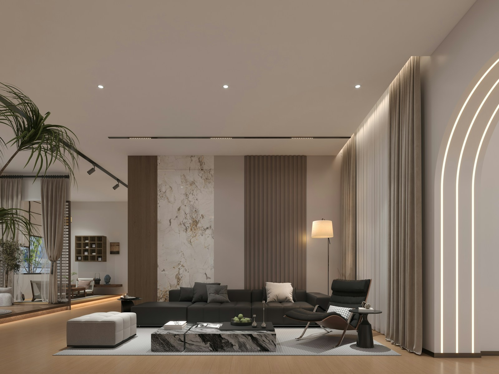

Our Upholstery Services
From a single cushion to a complete custom build — we have the expertise, materials, and passion to exceed your expectations.

Furniture Repair
Before you consider replacing that beloved sofa or chair, let us assess it. Many pieces that appear beyond saving have perfectly sound frames that simply need skilled attention to springs, padding, and fabric. We repair what others replace.

Reupholstering
Reupholstering breathes entirely new life into furniture you already love. We strip the piece down to its frame, rebuild the support structure as needed, apply new high-density foam, and finish with the fabric of your choice — creating something that looks and feels brand new.
Choose from our curated selection of over 200 fabrics and leathers, or bring your own. We carry performance fabrics ideal for families with children or pets, as well as luxurious velvets, genuine leathers, and designer linens.

Custom Manufacturing
When off-the-shelf simply won't do, we build it from scratch. Our custom manufacturing service is perfect for clients with specific spatial requirements, designers seeking unique statement pieces, or restaurant and hospitality operators who need durable, beautiful seating at scale.
Every custom piece begins with a consultation. We discuss your vision, take measurements, recommend materials, and provide a detailed sketch and quote before a single nail is driven. The result is furniture built precisely for you.


Premium materials, thoughtfully selected
We work exclusively with suppliers known for quality, durability, and beauty. Every material we use is chosen to ensure your furniture looks and performs its best for years to come.

Upholstery Fabrics
Velvets, linens, bouclés, performance weaves, microfibers — over 200 options in-house plus the ability to source virtually any fabric.
Genuine Leather
Full-grain, top-grain, and bonded leather options. We work with Italian and Canadian leather suppliers for exceptional quality and colour consistency.
Hardwood Frames
Kiln-dried hardwood for structural integrity. We use no particle board or MDF in our frames — only real wood joints that will hold for decades.
High-Density Foam
We use certified high-resilience foam in varying firmnesses. Unlike cheap foam that breaks down in 2–3 years, ours maintains its shape and support for a decade or more.